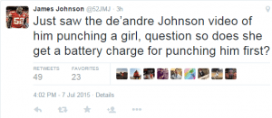
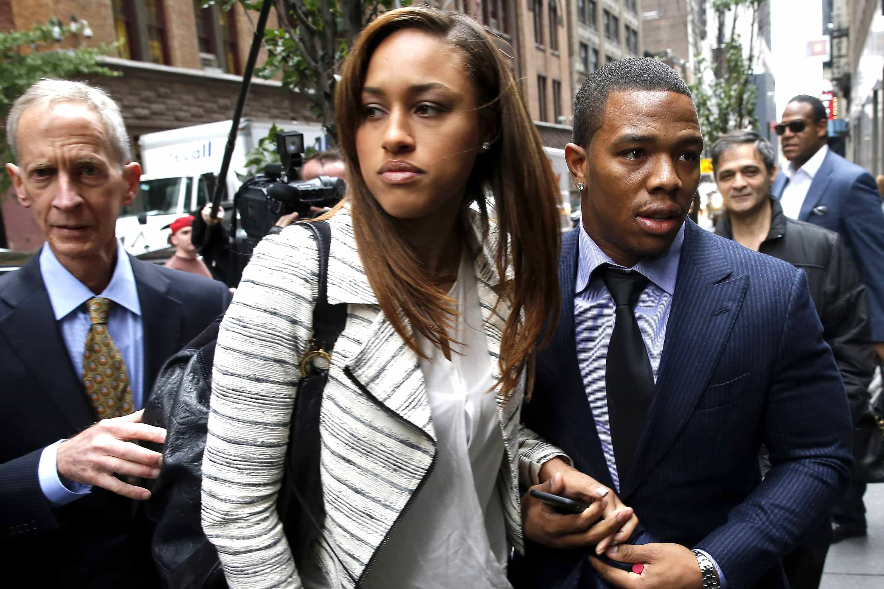

< < < Back
FSU Quarterback DeAndre Johnson’s Dismissal Shows That It Is Open Season On Persecuting Male Athletes – Return Of Kings
Florida State Freshman quarterback DeAndre Johnson was dismissed from the football team today after a security video showed him punching a female classmate in a bar. The incident happened last month, at which point Johnson was suspended, but after the revelation of the video he was permanently kicked off the team.
Breaking down the confrontation
Predictably, the narrative plastered all over TV was “College athlete slugs female student” leaving out any context or details that led to Johnson sticking the girl with a right cross.
In the essence of fairness, your humble correspondent is going to break this down for you:
0:05 – Johnson looks to politely ask a female to his left to allow him through to the bar
0:07 – A different female student to the right whips around and says something to Johnson, who ignores her and tries to maintain his position in line
0:13 – Female student whips around again, seemingly unprovoked, and starts yelling at Johnson
0:15 – Johnson is now enraged after having been confronted twice by the female student
0:16 – Female student raises her fist and appears to be threatening Johnson
0:17 – Johnson, not wanting to be struck, grabs her arm to prevent her from swinging.
0:18 – Johnson appears to be warning her not to swing at him and continues to restrain her
0:22 – Female student uses her other fist to punch Johnson
0:23 – Johnson retaliates by punching the female student back
That breakdown is a long way from “athlete hits woman.” But men here know the SJW agenda all but guarantees men will never get a fair shake in the court of public opinion, and increasingly in the court of law.
Clearly the girl was the aggressor in this situation. But, as usual, her responsibility is shoved to the side with cliches like “he should have just walked away” and “there’s no reason for a man to hit a woman.”
The typical reaction
So a male athlete cold-cocks a female…again. It’s caught on video…again. And scores of white knights and female sports pundits jumped on the “throw him to the gallows” bandwagon…again.
Things got off to a fast start on Mike and Mike In The Morning on ESPN radio with both Mikes condemning Johnson’s actions and agreeing wholeheartedly with Florida State’s decision to dismiss him from the team.
But Colin Cowherd was exponentially more judgmental when he opined on the topic (and I’m paraphrasing here):
I’m a forgiving guy. I understand guys make mistakes, they screw up, that’s life. But if you hurt children or hit women, I’m done with you. Don’t want you as my friend, don’t want you on my team, don’t want you anywhere around me…
…DeAndre Johnson should have just walked away. Life’s not fair and women aren’t held to the same physical standard as men. Be a grown up and walk away. You’re a Division I athlete. Act like it.

Johnson
I’ve listened to The Herd with Colin Cowherd for almost a decade, and for my money he is easily the most talented sports talk radio host of our time. He has a unique take on social issues as they apply to sports. In a word, Cowherd is nothing short of brilliant and that’s probably an understatement.
But he too has jumped on the SJW train, and it’s disappointing because he drops red pill truth on his show just about every day. One would think he’s just toeing the company line to keep his $2 million annual salary, and I wouldn’t blame him.
However, on issues pertaining to domestic violence he is uncharacteristically close-minded. It’s black and white to him. As far as he’s concerned if a man hits a woman he’s in the wrong 100% of the time no matter what the circumstances.
Cowherd’s attitude is prevalent in the minds of sports fans and sports media alike, and this is what ignites these pseudo lynch mobs when the shit hits the fan between a man and a woman.
Something unexpected…
Let’s go back to my morning bike ride—the time I listen to Mike and Mike in the morning. The two Mikes are going through their usual battery of berating the athlete for hitting a woman “regardless of the environment or circumstances” when they decide to start reading Twitter reactions to the situation.
The first one they decide to read is from a woman named Linda. Mike Greenberg reads the tweet:
Our first tweet comes from Linda who says “The female student shouldn’t have put her hands on him in the first place. If she doesn’t hit him, she doesn’t get hit.
Dead. Fucking. Silence.
I sported an ear to ear grin for what seemed like a solid five seconds of dead air as the Mikes were no doubt trying to think of a way to explain away Linda’s assertion that cut right to the heart of the issue: This woman brought this on herself.
Linda was dead on. If the girl doesn’t swing on Johnson, Johnson doesn’t swing on her and that’s all there is to it. You saw in the video that she was ready to get physical from the onset and Johnson did his best to de-escalate the situation by restraining her and preventing her from hitting him. We all know what happened next.
Cowherd was the next to get a dose of truth from a woman. Angela called in and gave Colin an earful about how the female student was every bit as responsible as Johnson was for the incident:
She shouldn’t have hit him. You can’t expect to hit somebody, man or woman, and expect them to sit there and take it. Now he was wrong for hitting her like he did but if she doesn’t hit him in the first place have we’re not having this discussion right now.
The sharp and quick-witted Cowherd is much quicker on his feet than Mike and Mike and managed to rebuttal Angela’s accurate assessment with more of the same black and white, bull headed rationale and got her off the phone (well…cut her off) to further drive home his point.
Men and women alike are beginning to publicly acknowledge this is a two way street
The fact that two women were allowed to share opposing opinions of the overall narrative that Johnson was the only one in the wrong was not only surprising, but showed that once again women know women. And when it comes down to it, women know deep down that most domestic violence situations are a two-way street.
It is officially open season on pro and amateur athletes
It’s actually been open season for quite a while. Ask Dallas Cowboys defensive end Greg Hardy, who was never convicted of what he was accused of but was suspended for the first 11 games of the 2015 season by NFL Commissioner Roger Goodell anyway.
Ask former University of Alabama football player Jonathan Taylor who was falsely accused of domestic violence and dismissed from the team immediately and not allowed back after his accuser not only recanted her accusation, but was later arrested for filing a false police report. Taylor has yet to find a spot on another college roster.
These and many other cases, including Johnson’s, is further proof that athletes are not just targets for gold diggers, but targets in general. The fact that a woman hit an athlete, and that athlete retaliates by hitting her back, and the athlete is the only individual punished or charged with a crime, sets a dangerous precedent.
Any woman at all can do just about whatever she wants to a professional or college athlete and get away with it while the athlete’s career is threatened and sometimes even ended by so much as an accusation, much less a video of the incident.
Conclusion
The bottom line is that if she hadn’t put her hands on Johnson, Johnson would not have put his hands on her, as Linda the tweeter summed it up. Nobody’s condoning hitting women, or saying domestic violence is okay. But it’s clear at this point that in most cases women are every bit as culpable for shit hitting the fan as the men are.
It’s no coincidence that in the two most publicized cases of athletes’ violence against women that have been caught on video, the woman was the aggressor. Janay Rice put her hands on Ray Rice before he knocked her out in the elevator and this petulant college chick punched Johnson before he punched her.

Ray and Janay Rice in the midst of a media firestorm in the wake of the release of the elevator video
And if you think these two women throwing the first punch in these cases are exceptions to the rule, you’re kidding yourself. Men rarely hit women for no reason and these two cases shine a light on this truth that few people outside the manosphere seems to want to grasp.
SJWs obviously want Johnson to endure every type of punishment short of deportation, but State’s Attorney Willie Meggs only charged Johnson with misdemeanor battery. Johnson turned himself in and was released on $500 bond. So much for a “heinous crime.”
One might think that DeAndre Johnson’s college career is finished and most of the time you’d be right. But new reports have surfaced that the woman Johnson decked called him a nigger and that there are witnesses who are willing to testify to this on the stand.
Only time will tell if there is any truth to this but if these reports are true, it throws this saga into a whole ‘nother realm which is another discussion. For now, this could lead to Johnson getting a second chance at another university because SJWs in the racial sector will most assuredly come to his defense.
It’s getting to the point where college and professional athletes not only risk their wealth by mingling with females, but also their futures and freedom. And since athletes, amateur and professional, will always attract females in droves there will always be potential for these run-ins.
Eventually, something’s gotta give.
Read Next: The Shameless Exploitation Of Domestic Violence In The NFL


{kind=link}
{kind=link}